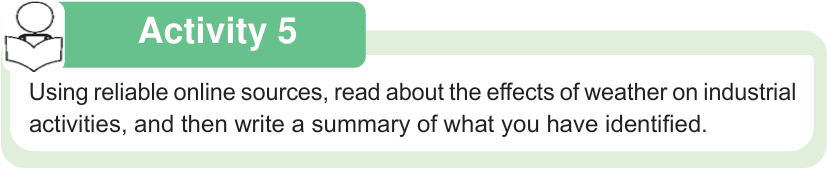

Geography and the Environment Pupil’s Book Standard Five

Activity 5
Using reliable online sources, read about the effects of weather on industrial activities, and then write a summary of what you have identified.